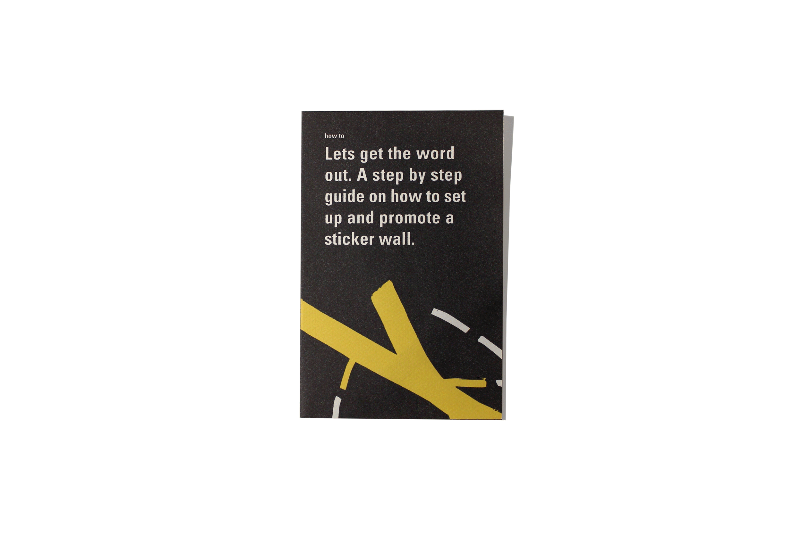
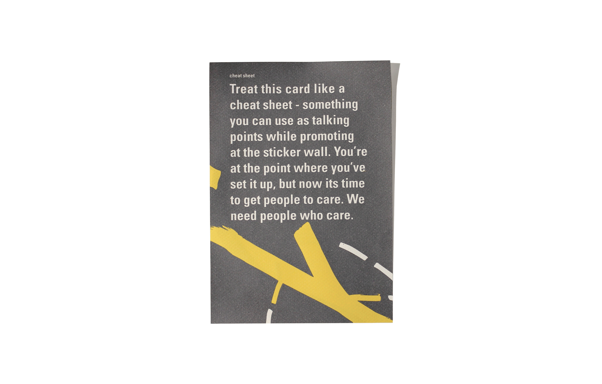
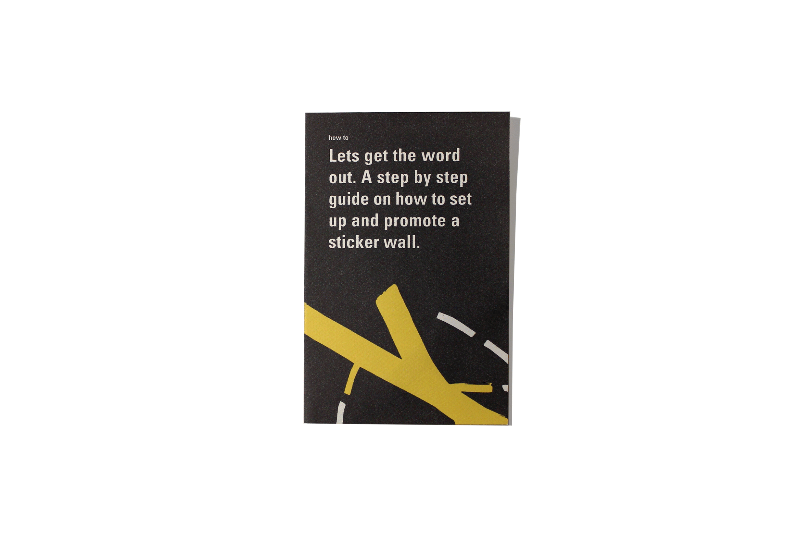
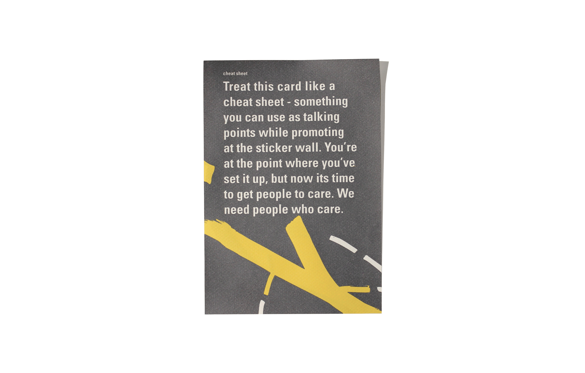

 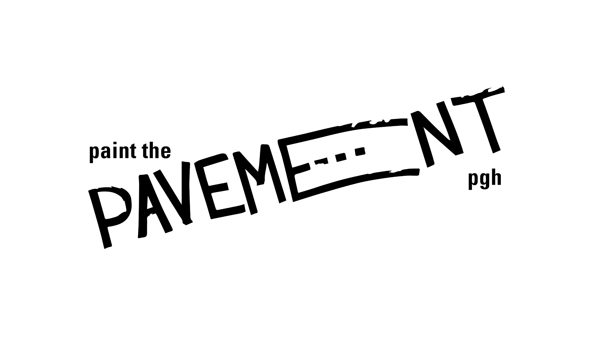
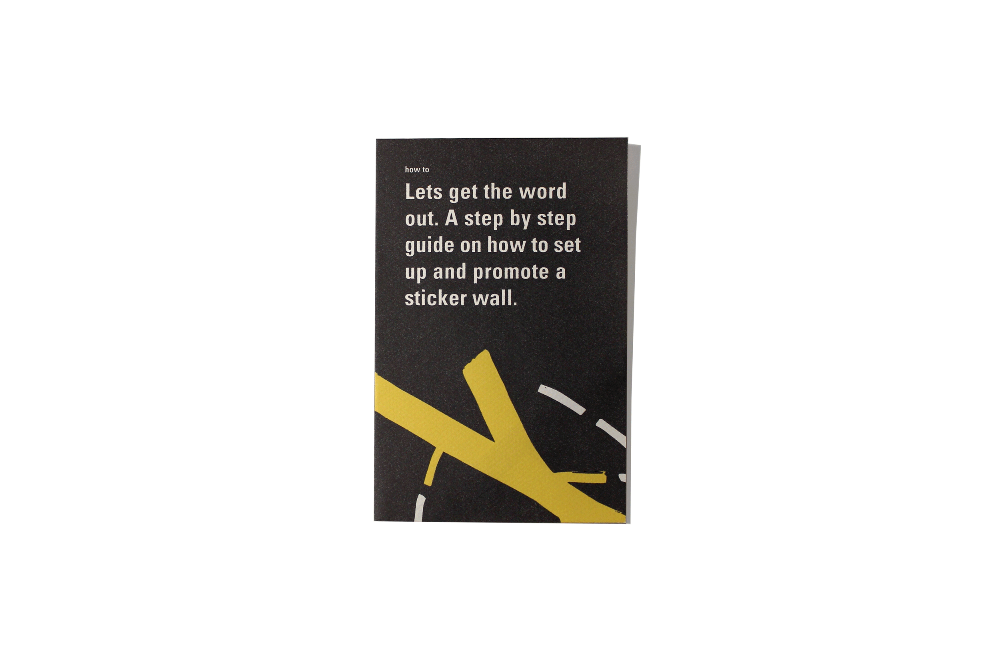
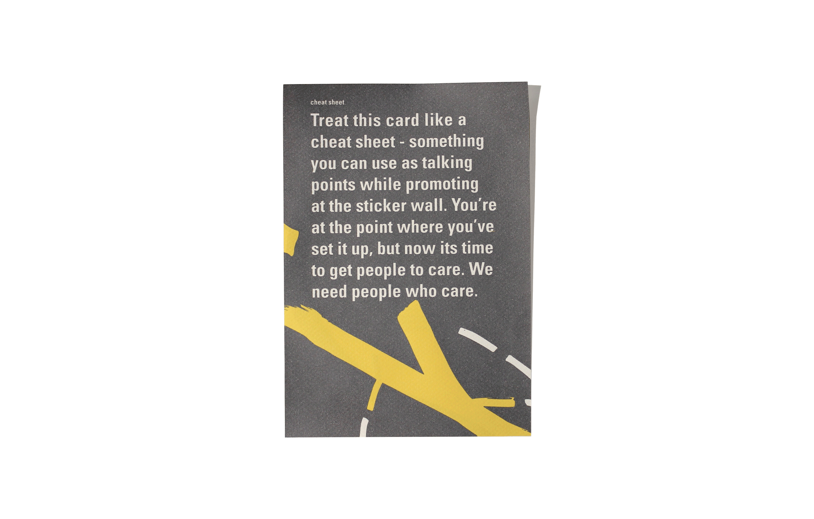
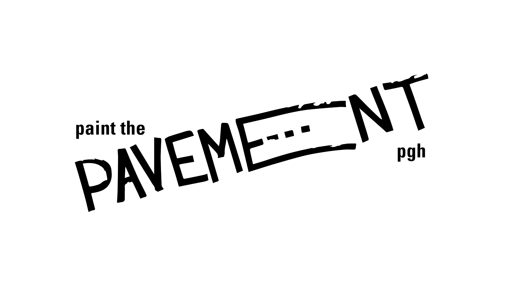
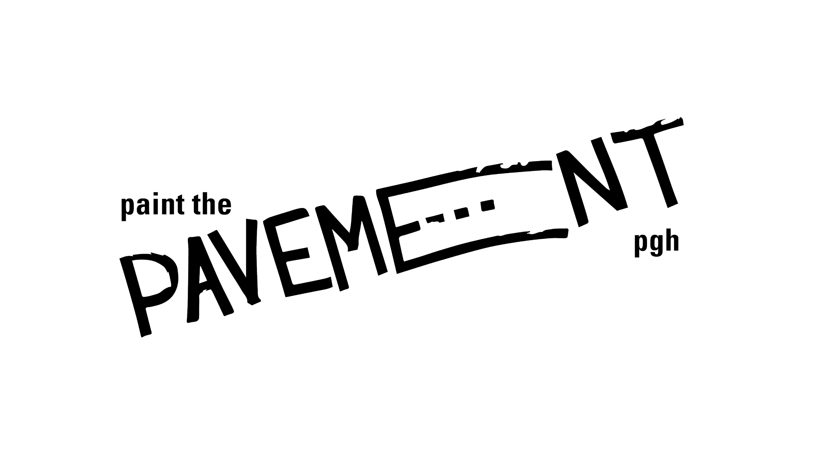
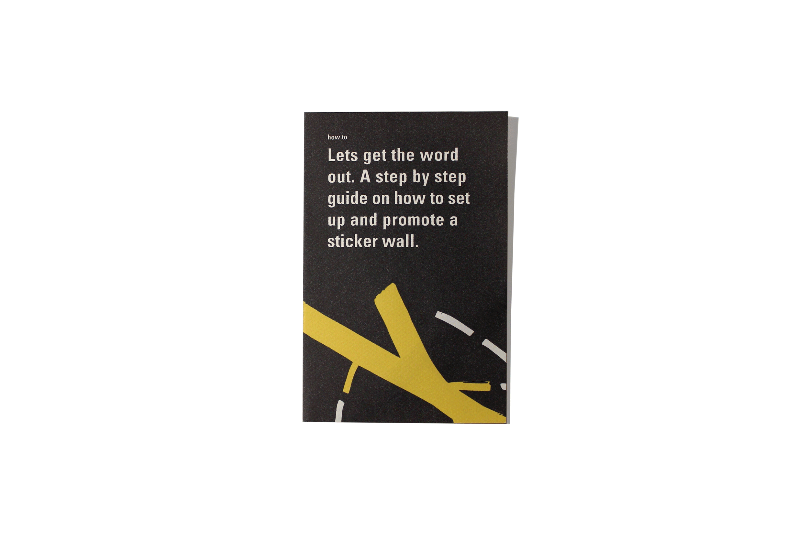
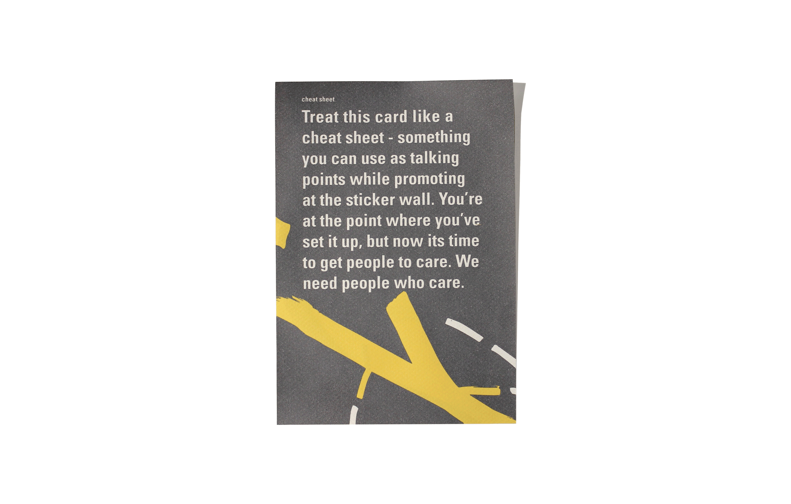
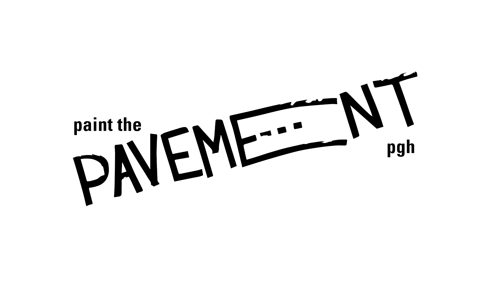
Service Design
Print
Fall 2016
PAINT THE PAVEMENT is a organization whose goal is to bring communities together in lower income areas by building connections between artists, organizations and neighborhood residents.
The system has been designed for and inspired by Pittsburgh to align with the organization's goal of bringing people together and creating a sense of unity, place and identity. The wordmark, which later inspired and served as the backbone to the system, references the design of roads and was created by using mark-making techniques one would find on the street.
The system consists of a set of pamphlets that are sent to community leaders and members, who will utilize them to promote the organization and to guide the application process. To make the application more consumable, the large amount of information has been divided into seperate pamhplets.
The systems exemplifies the belief that every design decision must be intentional in order to present cohesive and effective deliverables. The wordmark, which was designed first designed later went on to influence my type system, the hierarchy throughout as well as the way-finding system I developed for the deliverables.